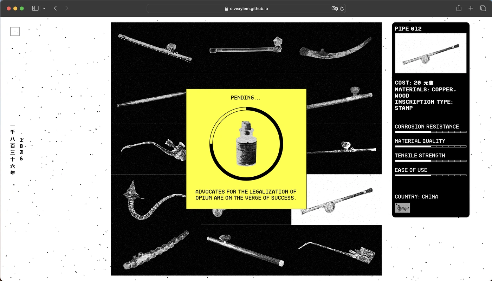
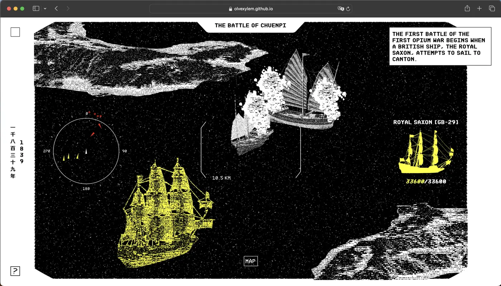
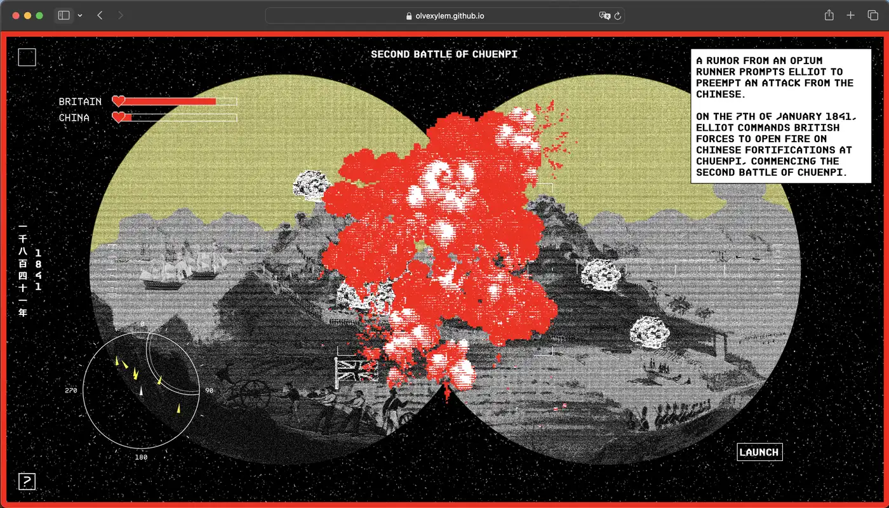
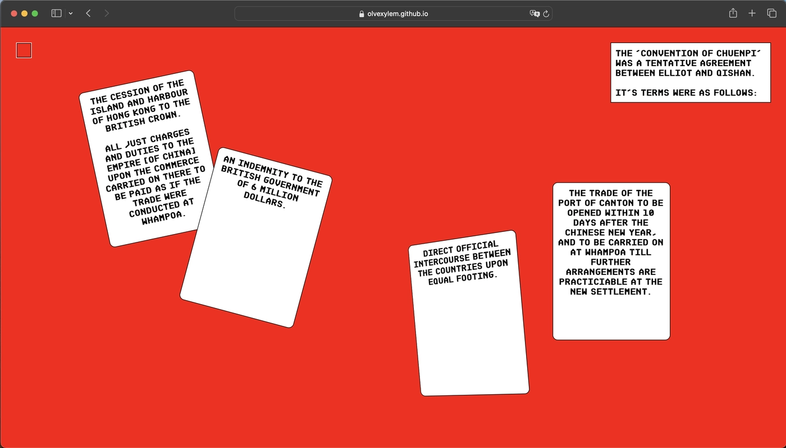
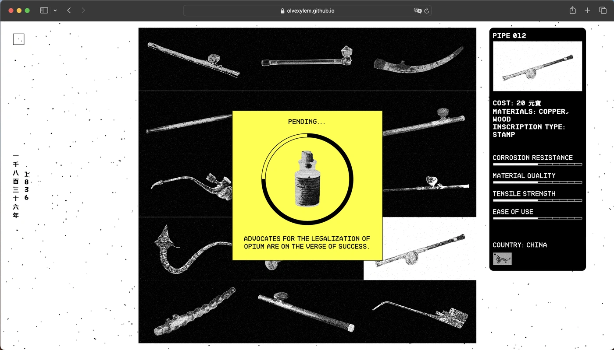
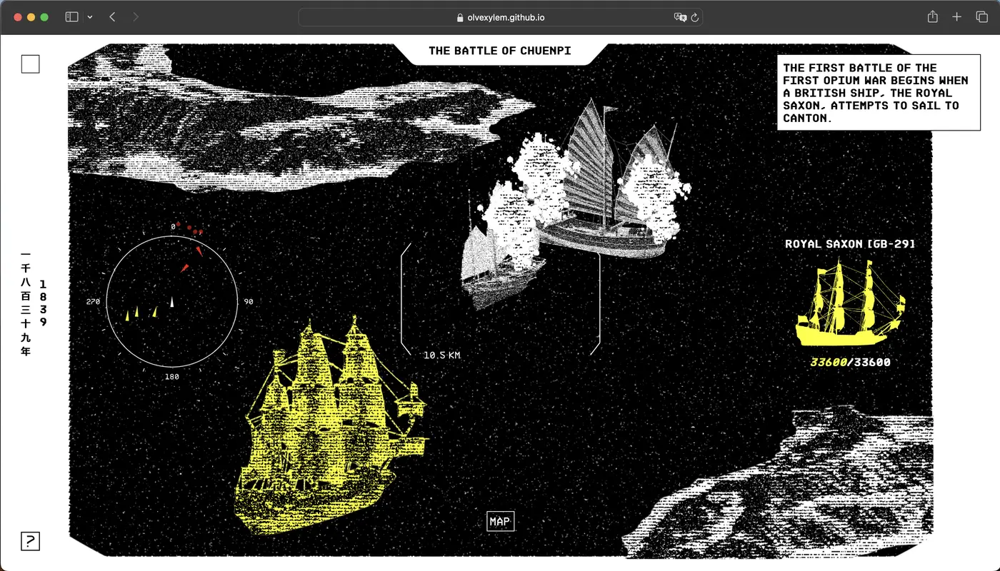
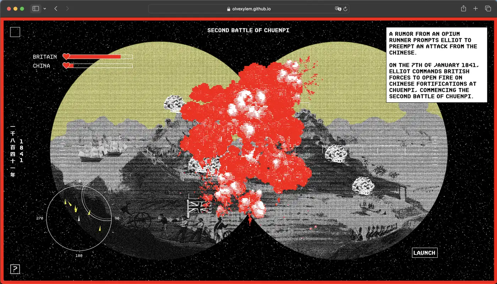
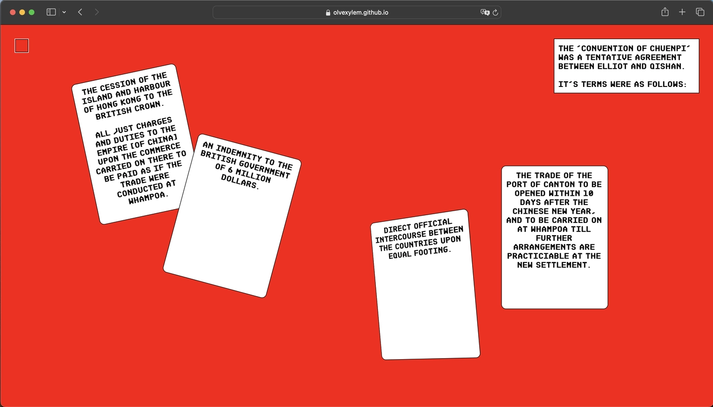

olvehyh
« Opium War Timeline »
*See Website here
A digital timeline of the first Opium War fought between China and Great Britain
from 1839 to 1842. Inspired by retro video games from the late 80s and early 90s.
Webzine
Front-End Web Development · Graphic Design
48.1 MB | English (with Traditional Chinese headings)
Den Haag, 2023
Typeface: BDR Mono
Built with: HTML · CSS · JavaScript
Front-End Web Development · Graphic Design
48.1 MB | English (with Traditional Chinese headings)
Den Haag, 2023
Typeface: BDR Mono
Built with: HTML · CSS · JavaScript
 






